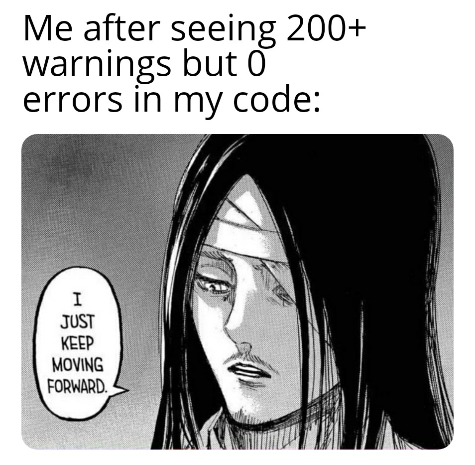
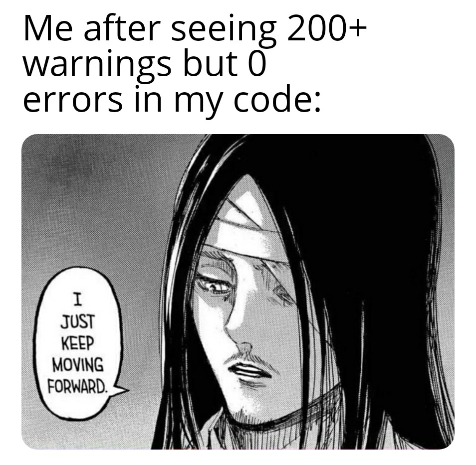

Jhon Morales' Page
Welcome, visitor! This is the homepage for "Jhon's Assignment 4."
This website will use commulative knowledge learn in IASC 1P02,where
you will be able to see the application of 3 core languages
use for the creation of websites HTML,CSS, and Javascript.
In regards to the designed of the website, the color scheme,
header, navigation, and footer, will remain consistent in order
to stablish uniformity in the design. The body of each page
will be different, to show case how different language
functionalities work when using CSS and/or Javascript.
The Homepage will take you back to the page you are currently
in. Where you can find a brief description of the other websites.
This page will contain poem, ilustrations relevant to the
topic of poem, and there will also be video of person reading said
poem. Additionally, there will be some pictures that are relevant
to the writting or theme. HTML and CSS will be the languages used
to alter the text font, weight, and create indents that are visible
to the user of the website.
Manga, which is a form of story telling through what we know
in the west as comics, with a distinctive form of graphical work
which originated in Japan during the late 19th and early 20th
century. Manga has diverse styles of drawing and genres which
will be explored in this section. CSS will be used to alter or
create effects on the images.
This will be the fourth and final page in this website
where we different functionalities of Javascript(JS). Here JS will
be use with the objective of showcasing basic knowledge of this
website's author of this programming language.
 
